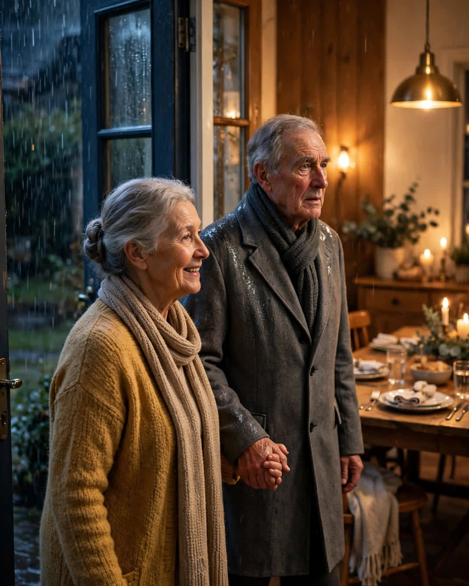

The Extra Plate
A Clipp Kaili original story

For as long as I can remember, my grandmother set seven plates for Sunday dinner, and there were only ever six of us.
The seventh plate sat at the far end of the table, with a folded napkin, a full glass of water, and a chair pulled out just enough to look welcoming. If a neighbor stopped by, they got the plate. If a cousin brought a friend home from college, they got the plate. Most Sundays, nobody sat there at all, and Grandma would wrap whatever went uneaten and send it home with whoever lived closest to an empty fridge.
"Who's it for?" I asked her once, when I was old enough to think I was too smart for traditions.
"Whoever needs it," she said, like it was the most obvious thing in the world. "You don't wait until somebody is hungry to set the table for them, Ellie. By then you're just performing. You set it first. That's faith."
People in town called it Grandma Rose's empty plate. Some of them rolled their eyes about it, the way people do about kindness they don't want to feel guilty for skipping. Grandma never argued. She just kept setting it, through thirty years of Sundays, through Grandpa's death, through winters when money was tight and the roast got smaller. The plate never got smaller. A welcome you shrink when times are hard was never a welcome at all.
The Sunday it finally mattered, it was raining so hard the gutters overflowed.
Professor Daniel Whitaker had moved into the rental house across the street in August. He taught history at the college, wore the same gray coat in all weather, and had eaten every meal alone since his wife died the spring before — a fact the whole street knew and politely did nothing about. We waved. We said hello. We left him exactly as alone as grief had left him, and told ourselves we were respecting his privacy.
Grandma saw him that Sunday through the rain, sitting in his car in his own driveway, engine off, just staring at his dark house like he couldn't make himself go inside to one more quiet dinner.
She walked across the street in the rain with no umbrella and knocked on his car window.
She didn't give a speech. She just said, "We have a plate already set for you. It's been set all year."
He cried right there in the car. He told us later he had sat in that driveway more evenings than he could count.
He came to dinner in wet shoes. He sat in the seventh chair. He barely spoke the first hour, but he ate two helpings of everything, and when Grandma asked him about the college, words started coming out of him like water through a cracked dam — stories about his wife, his students, the book he had stopped writing. Nobody made it a big deal. That, I think, is why he came back the next Sunday. And the next.
He never missed another Sunday in Grandma's house. When she turned eighty, he was the one who set the table. When she couldn't stand long enough to cook anymore, he learned her recipes from a chair pulled up beside the stove, writing everything down in a professor's neat handwriting. The year Grandma died, he set seven plates at his own table across the street, and he set the seventh one out first.
He still does. I know, because last Sunday my own daughter asked him who it was for, and he smiled the exact smile Grandma used to wear.
"Whoever needs it," he said. "You set it first. That's faith."
An empty plate is never really empty.
It is a promise a family makes before it knows who it is making it to.
This story is a work of fiction, written to touch hearts and bring families closer.
← Back to all stories